Qu'est-ce qu'une veille technologique ?
La veille technologique ou veille scientifique et technique consiste à s’informer de façon systématique sur les techniques les plus récentes et surtout sur leur mise à disposition commerciale (ce qui constitue la différence entre la technique et la technologique).
Cette activité met en œuvre des techniques d’acquisition, de stockage et d’analyse d’informations et leur distribution automatique aux différentes sections concernées de l’entreprise, à la manière d’une revue de presse. Ces informations peuvent concerner une matière première, un produit, un composant, un procédé, l’état de l’art et l’évolution de l’environnement scientifique, technique, industriel ou commercial de l’entreprise.
Elle permet aux bureaux d’études d’être informés des baisses possibles de coût ou d’augmentation de qualité dans le cadre de l’analyse de la valeur. L’entité de production connaît mieux grâce à elle ses limites de production et sa concurrence future.
Cette activité met en œuvre des techniques d’acquisition, de stockage et d’analyse d’informations et leur distribution automatique aux différentes sections concernées de l’entreprise, à la manière d’une revue de presse. Ces informations peuvent concerner une matière première, un produit, un composant, un procédé, l’état de l’art et l’évolution de l’environnement scientifique, technique, industriel ou commercial de l’entreprise.
Elle permet aux bureaux d’études d’être informés des baisses possibles de coût ou d’augmentation de qualité dans le cadre de l’analyse de la valeur. L’entité de production connaît mieux grâce à elle ses limites de production et sa concurrence future.
Présentation
Il existe trois grands types d’objets connectés :
• Les connectants : Nos postes de radio et téléviseurs par exemple, des récepteurs passifs de longueurs d’onde.
• Les connectés : Des capteurs d’informations qui communiquent avec un élément distant (smartphone, serveur).
• Les intelligents : Des capteurs d’information auxquels on a adjoint une couche logicielle qui lui donne une autonomie, comme la capacité d’apprendre des situations ou d’interagir avec l’environnement.
Il s'agit d'un matériel électronique qui peut communiquer avec un smartphone, une tablette tactile, une montre, un ordinateur ou une télévision. Communiquer, cela signifie qu'il peut envoyer et recevoir des informations, par le biais d'une liaison sans fil, Bluetooth ou Wifi Le terme objet connecté désigne tout objet de la vie courante possédant la capacité de se connecter à Internet et donc améliorer ses possibilités.
• Les connectants : Nos postes de radio et téléviseurs par exemple, des récepteurs passifs de longueurs d’onde.
• Les connectés : Des capteurs d’informations qui communiquent avec un élément distant (smartphone, serveur).
• Les intelligents : Des capteurs d’information auxquels on a adjoint une couche logicielle qui lui donne une autonomie, comme la capacité d’apprendre des situations ou d’interagir avec l’environnement.
Il s'agit d'un matériel électronique qui peut communiquer avec un smartphone, une tablette tactile, une montre, un ordinateur ou une télévision. Communiquer, cela signifie qu'il peut envoyer et recevoir des informations, par le biais d'une liaison sans fil, Bluetooth ou Wifi Le terme objet connecté désigne tout objet de la vie courante possédant la capacité de se connecter à Internet et donc améliorer ses possibilités.
Comment ça marche ?
Pour son fonctionnement, un appareil éléctroménager connecté doit se relier à un réseau.
Selon l’utilisation, cela peut être via un port Ethernet ou en Wi-Fi pour bénéficier d’Internet.
Certains appareils demanderont plutôt une connexion en Bluetooth pour s’appareiller à votre tablette ou smartphone comme la montre qui se connecte directement a un téléphone, ou encore la tablette numérique intégrée aux voitures nouvelles générations
Selon l’utilisation, cela peut être via un port Ethernet ou en Wi-Fi pour bénéficier d’Internet.
Certains appareils demanderont plutôt une connexion en Bluetooth pour s’appareiller à votre tablette ou smartphone comme la montre qui se connecte directement a un téléphone, ou encore la tablette numérique intégrée aux voitures nouvelles générations
Les montres connectées
La toute première montre connu comme un ordinateur de poignet est la Pulsar de 1972, mise au point par The Hamilton Watch Company.
Elle n’était pas encore connectée, mais elle possédait un pavé numérique et elle faisait office de calculatrice.
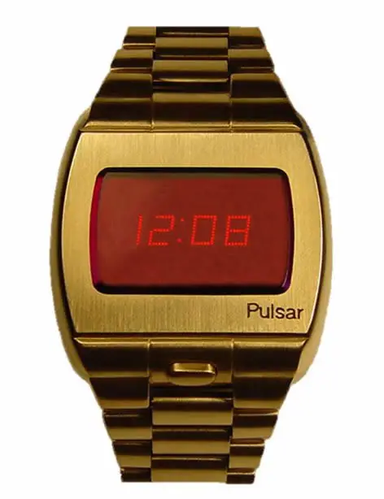
Dès 1999, Samsung était à l'avant-garde avec le SPH-WP10. C'était une montre plutôt maladroite qui pouvait être utilisée comme téléphone portable.
elle était compatible avec les réseaux CDMA, un système de codage présent dans certaines régions d'Asie et d'Amérique du Nord.
il est possible de discuter pendant 1 heure 30 avant que la batterie ne s'épuise
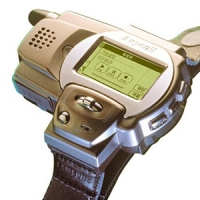
Ensuite, vient la montre GPS Sport, en 2003 la Garmin Forerunner 101 révolutionne le monde de la montre connecté avec son GPS intégrée
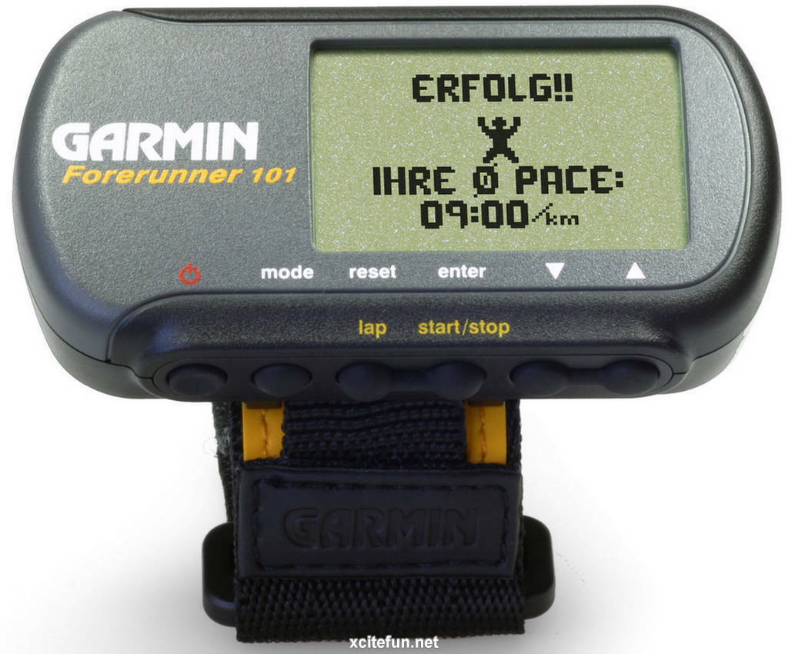
Chronologiquement, celle qui a suivi en 2009 s'agit de la Hyundai MB 910 celle-ci est munie d'un écran 1.5 pouce jouissant d'une définition de 132 x 176 pixels ainsi qu'une mémoire de 128 Mo.
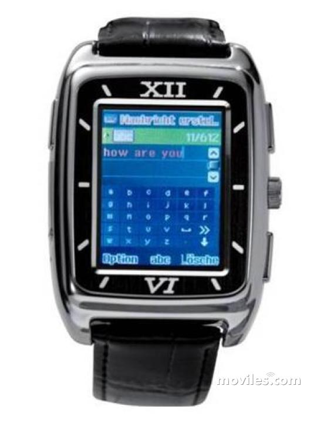
A partir de 2013, suite à la sortie de la Galaxy Gear, samsung sort la montre intelligente capable de filmer, se connecter en Bluetooth, un ordinateur de poignet.
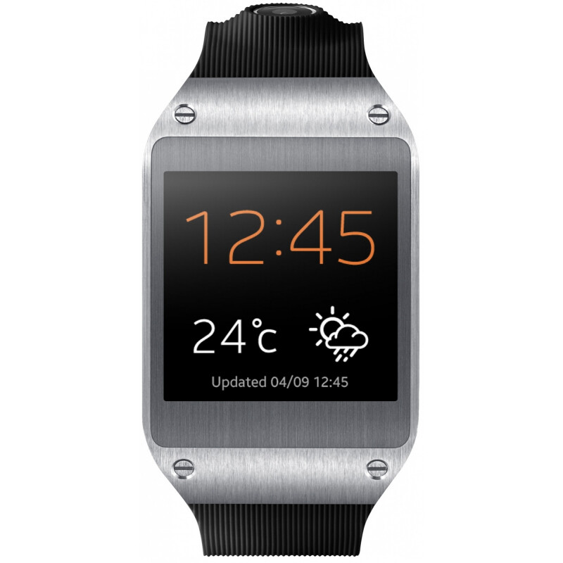
En 2014, Apple sort l'incontournable Apple Watch 1 qui un est smartphone complet sur poignet capable d'appeler, envoyer des messages, prendre des photos en 720p mais est compatible qu'avec un Iphone donc une exclusivité Apple.
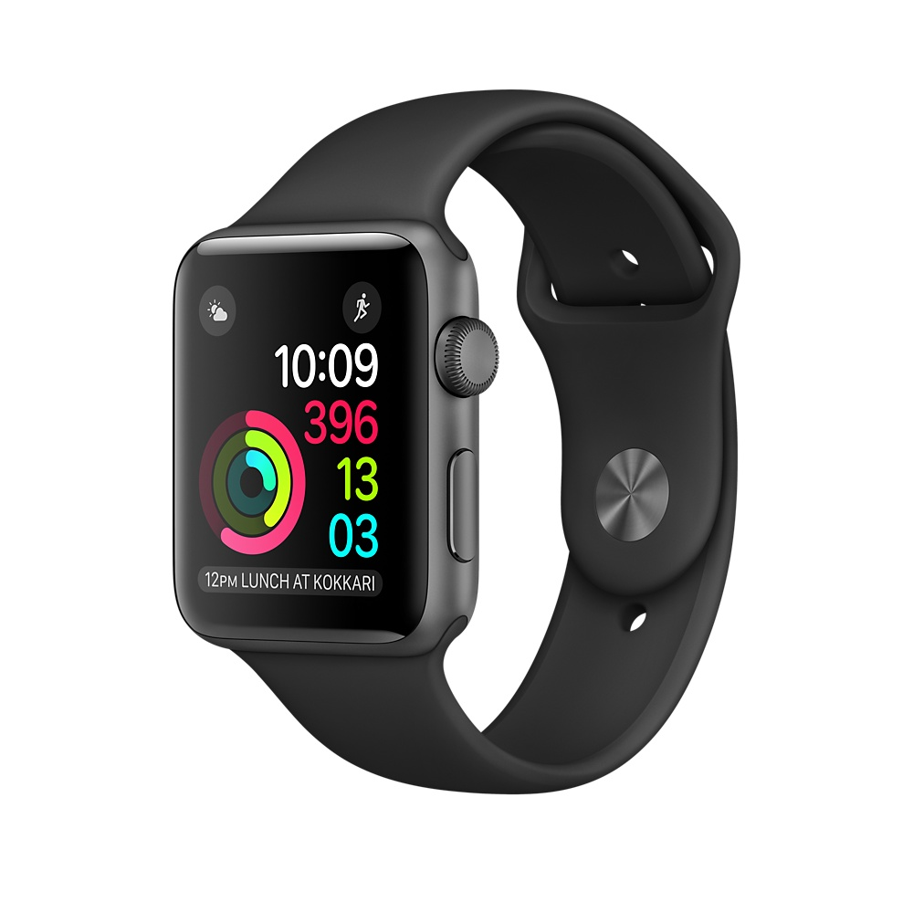
En 2021, Apple sort l'Apple Watch 7 mais est reservé qu'a une petite communauté (la montre coute 400€ et est compatible seulement avec les iphones).
Samsung Galaxy Watch 4 Classic sort la même année et est beaucoup plus abordable au niveau du prix pour les mêmes fonctionnalités.
En 2022 l'Apple Watch 8 pour 500€ fait son apparition ainsi que l'Apple Watch SE à 299€ qui est la plus utilisée. Après des années d’attente, Google lance sa montre connectée. Sobrement baptisée Pixel Watch, elle figurait sans doute parmi les produits les plus attendus des fans. La raison est simple : Google n’a jusqu’à maintenant proposé aucune alternative équivalente à l’Apple Watch dans l’univers Android. La Pixel Watch est là, et elle ne déçoit pas.
On a aussi la Samsung Galaxy Watch Pro 5 qui est la montre "la plus complète" d'Android, l'équivalent de l'apple watch sur android, sachant qu'apple watch est reservé que sur les Iphones. La Pro coute 490€, la simple 240€ Suite à ces révolutions, les marques Samsung Apple Huawei et Google entre dans une complete conccurence sur tous les marchés, des nouvelles montres sont en développement en continue comme on peut le voir avec l'Apple Watch 8, la samsung galaxy watch 5 Pro ainsi que Huawei Watch GT 3.
Le 20/01/2023, James Park annonce avoir penser à une montre fitbit sous Wear OS (montre pour activité physiques) en lien avec la Pixel watch de Google
Page Twitter Samsung FR
Les montres qui ont marqué l'histoire
Page Twitter Huawei
Comparatif de montres 2022
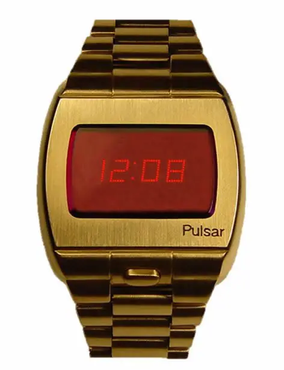
Dès 1999, Samsung était à l'avant-garde avec le SPH-WP10. C'était une montre plutôt maladroite qui pouvait être utilisée comme téléphone portable.
elle était compatible avec les réseaux CDMA, un système de codage présent dans certaines régions d'Asie et d'Amérique du Nord.
il est possible de discuter pendant 1 heure 30 avant que la batterie ne s'épuise
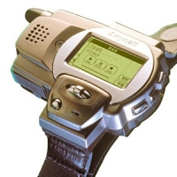
Ensuite, vient la montre GPS Sport, en 2003 la Garmin Forerunner 101 révolutionne le monde de la montre connecté avec son GPS intégrée
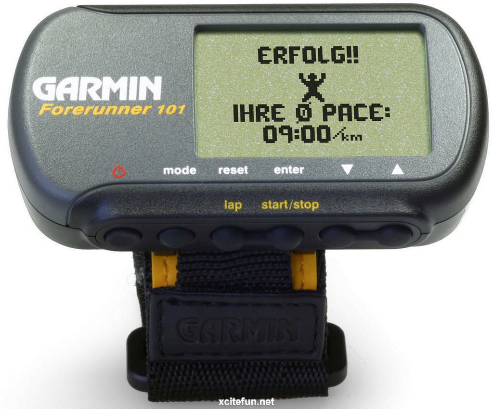
Chronologiquement, celle qui a suivi en 2009 s'agit de la Hyundai MB 910 celle-ci est munie d'un écran 1.5 pouce jouissant d'une définition de 132 x 176 pixels ainsi qu'une mémoire de 128 Mo.
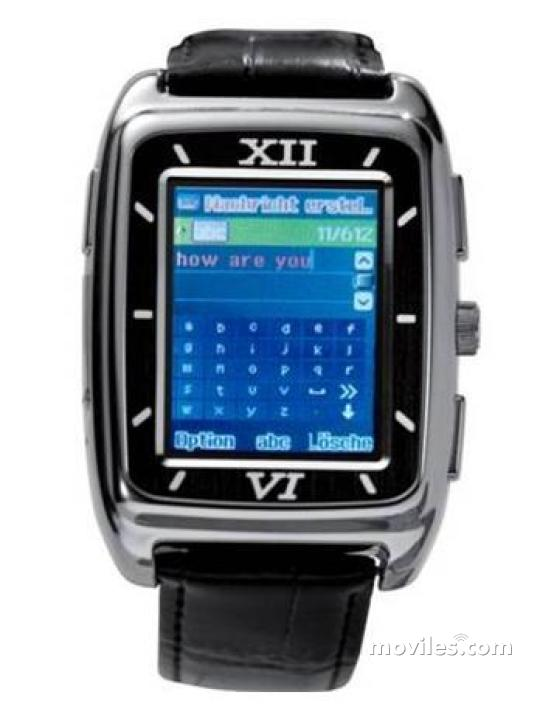
A partir de 2013, suite à la sortie de la Galaxy Gear, samsung sort la montre intelligente capable de filmer, se connecter en Bluetooth, un ordinateur de poignet.
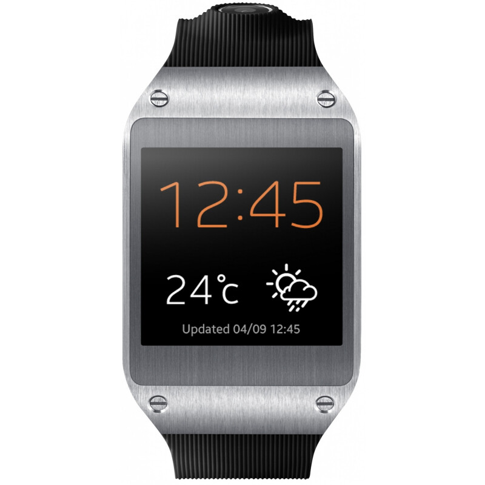
En 2014, Apple sort l'incontournable Apple Watch 1 qui un est smartphone complet sur poignet capable d'appeler, envoyer des messages, prendre des photos en 720p mais est compatible qu'avec un Iphone donc une exclusivité Apple.
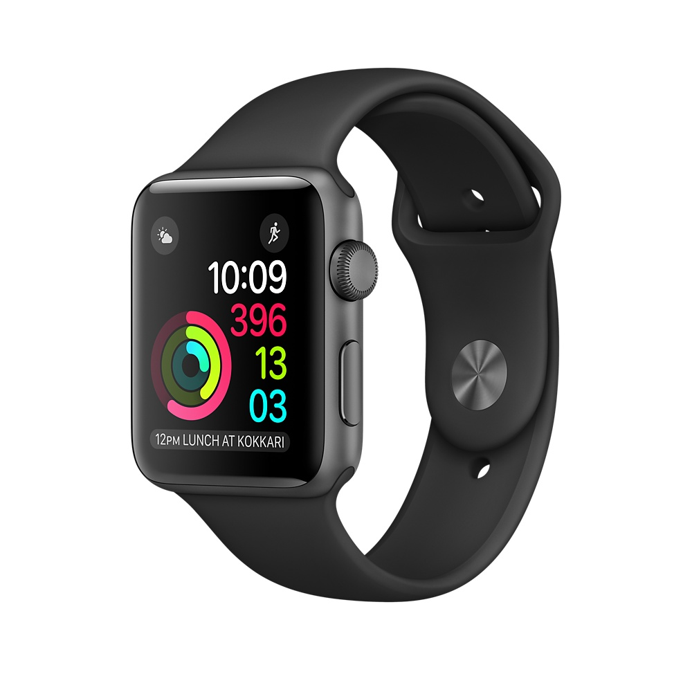
En 2021, Apple sort l'Apple Watch 7 mais est reservé qu'a une petite communauté (la montre coute 400€ et est compatible seulement avec les iphones).
Samsung Galaxy Watch 4 Classic sort la même année et est beaucoup plus abordable au niveau du prix pour les mêmes fonctionnalités.
En 2022 l'Apple Watch 8 pour 500€ fait son apparition ainsi que l'Apple Watch SE à 299€ qui est la plus utilisée. Après des années d’attente, Google lance sa montre connectée. Sobrement baptisée Pixel Watch, elle figurait sans doute parmi les produits les plus attendus des fans. La raison est simple : Google n’a jusqu’à maintenant proposé aucune alternative équivalente à l’Apple Watch dans l’univers Android. La Pixel Watch est là, et elle ne déçoit pas.
On a aussi la Samsung Galaxy Watch Pro 5 qui est la montre "la plus complète" d'Android, l'équivalent de l'apple watch sur android, sachant qu'apple watch est reservé que sur les Iphones. La Pro coute 490€, la simple 240€ Suite à ces révolutions, les marques Samsung Apple Huawei et Google entre dans une complete conccurence sur tous les marchés, des nouvelles montres sont en développement en continue comme on peut le voir avec l'Apple Watch 8, la samsung galaxy watch 5 Pro ainsi que Huawei Watch GT 3.
Le 20/01/2023, James Park annonce avoir penser à une montre fitbit sous Wear OS (montre pour activité physiques) en lien avec la Pixel watch de Google
Sources
Découvrir l'histoire de la montre connectéePage Twitter Samsung FR
Les montres qui ont marqué l'histoire
Page Twitter Huawei
Comparatif de montres 2022